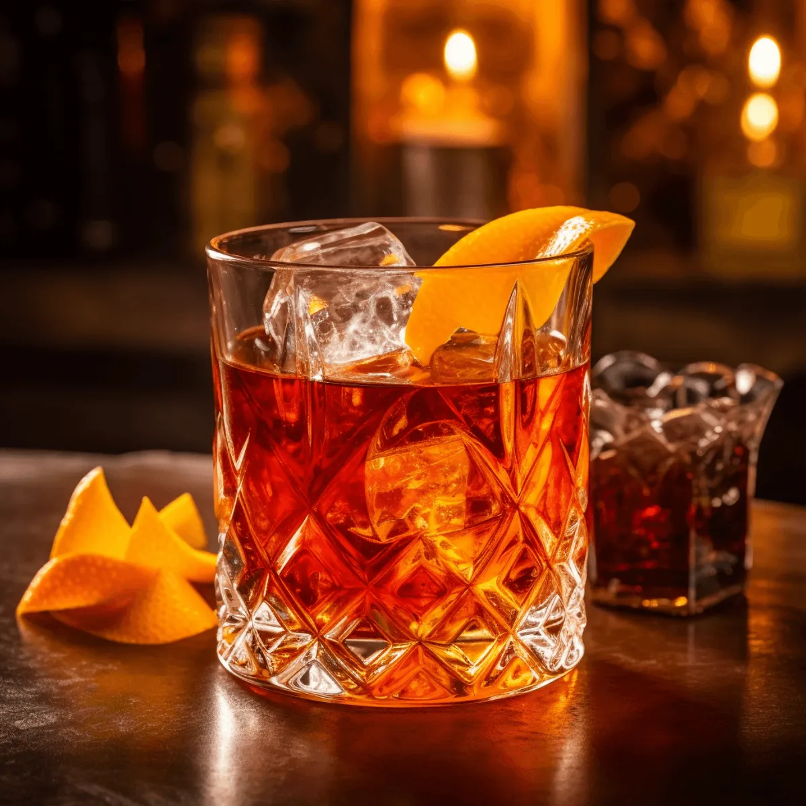
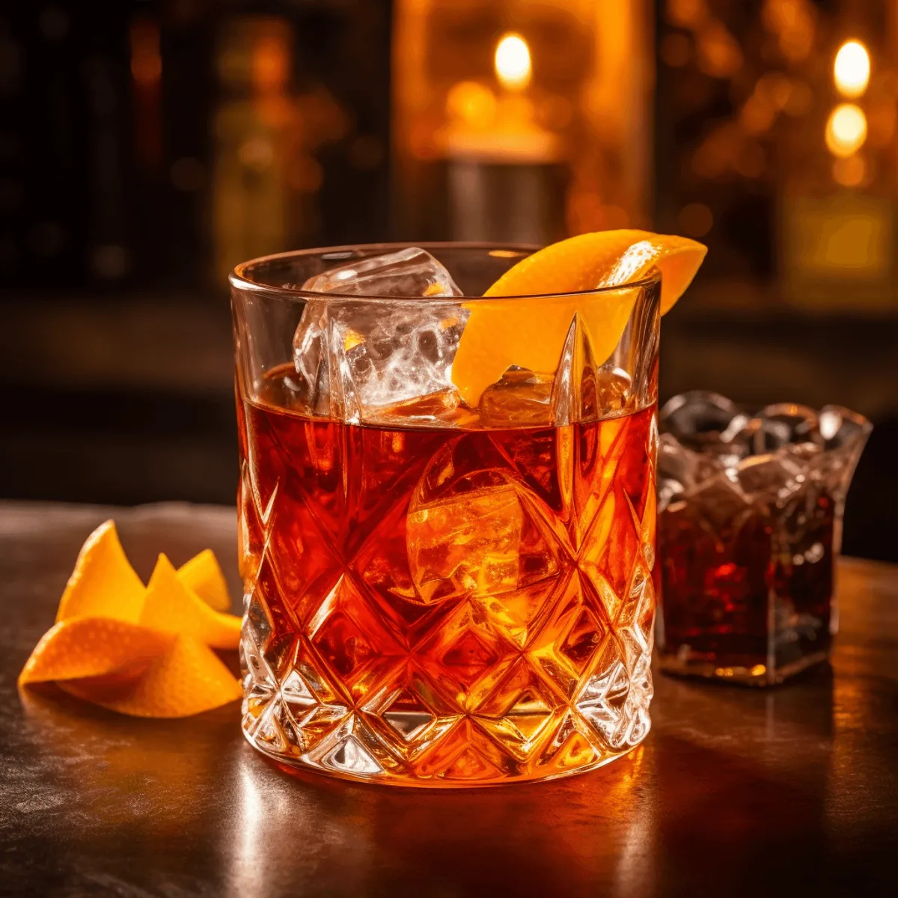

Ninguém tem a segunda possibilidade de causar a primeira impressão
Aluisio Machado

Sobre o Utopia Bar
Como surgiu: Thiago (Proprietário), após uma carreira extensa na área de logística em uma multinacional
passando
por diversos setores e estado do pais, sempre apreciou empreendimento mais voltado na área alimentícia
(como:
bares e restaurantes), após a pandemia assolar o mundo inteiro, Thiago com seu “sonho” em mente de elaborar
um
estabelecimento inovador no ramo alimentício, juntamente com seu pai (seu companheiro incondicional),
decidiram
procurar um ponto, após identificar através de amigos em comum decidiram criar o Utopia Bar , um lugar
inovador,
ambiente social e familiar, um lugar para sentir-se “em casa” literalmente, totalmente a vontade, um ponto
de
encontro de amigos, família, casal (com diversos públicos, etnias, classes sociais e sem distinção alguma de
raça, cor e opção sexual) ou seja, um ambiente para Todos.

 
